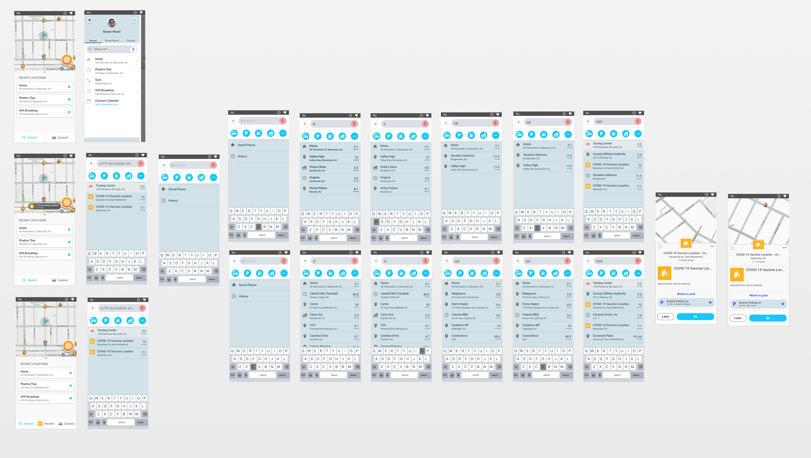

A/B Test Design - Waze
I created three prototypes of the Waze app which, at the time, presented possibilities for helping Wazers discover information on vaccination locations and/or availability.
 Kevin Towner•2 minute read
Kevin Towner•2 minute read
Breakdown
Timeframe:
- • 8.11.21 - 8.13.21
- • One week assignment
My Role:
- • UI designer
- • UX researcher
Tools:
- • Figma
- • Useberry
Inspiration/Resources:
Overview
The Problem
During the pandemic, when vaccination locations were unclear, many people were confused as to when, where, and how they could receive vaccinations to address COVID-19. Using Waze as a foundation for the prototypes, How could I design an A/B test that addressess COVID-19 vaccination confusion?
Specifications
The test consists of three separate prototypes that represent two different solutions, and the control variable(s). Testing for significant changes in completion time between tests and control.
- • Test C - Control
- • Test A - Bottom Navigation Button
- • Test B - Popup
Test C
Control Screens
Test C has two screens which remain consistent across all three prototypes, and thirteen additional screens that represent the user searching for vaccination information.
Test A
Small popup window
For Test A, I chose to incorporate a pressable popup notifying users of nearby vaccination locations. The two locations mentioned in the popup will be displayed to participants in the form of a list after being pressed. After selecting one of the options, participants will view geographic and parking information on the vaccination location.
Test B
Bottom navigation button
Test B is similar to Test A, except instead of a small popup window, participants will encounter a button on the bottom navigation menu. The button will bring participants to the two itemed list mentioned in Test A where they can select an option.
A/B Test Quick View


Results
No Significance
There was no significance in completion time or completion rate between the Control and Test B. In both prototypes, there were participants who did not complete the prototype by opting to skip completion. In one case, a participant dropped off.
What about Test A?
I failed to collect data on Test A due to a combination of technical issues and Useberry versioning issues. Other possible contraints included:
- • Time limit
- • Solo project
UI Components
Small components
 small components
small components
Medium components
 medium components
medium components
Large components
 large components
large components
Takeaways
Final Screens
 all screensGoing forward
It's important to fully understand the tools and their limitations before delving deep into a project. It would be interesting to conduct the A/B test with all prototypes involved and on a carefully selected participant pool. Some constraints included a fairly limited amount of time to conduct quality research before designing the tests, Useberry's versioning specifications, and limited time to gather ideal research participants.